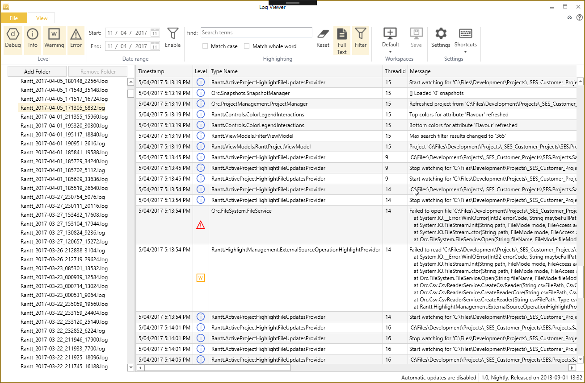
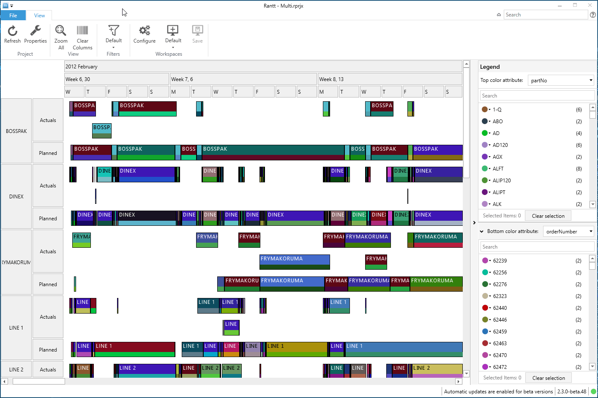
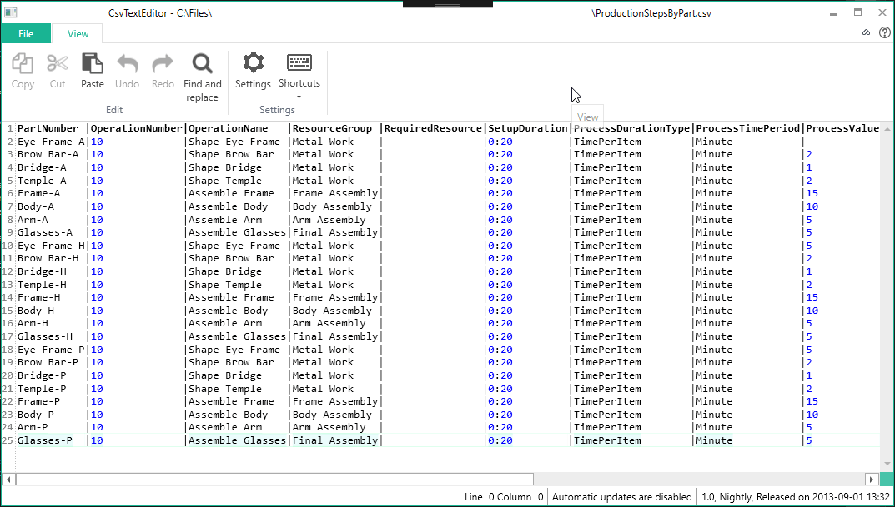
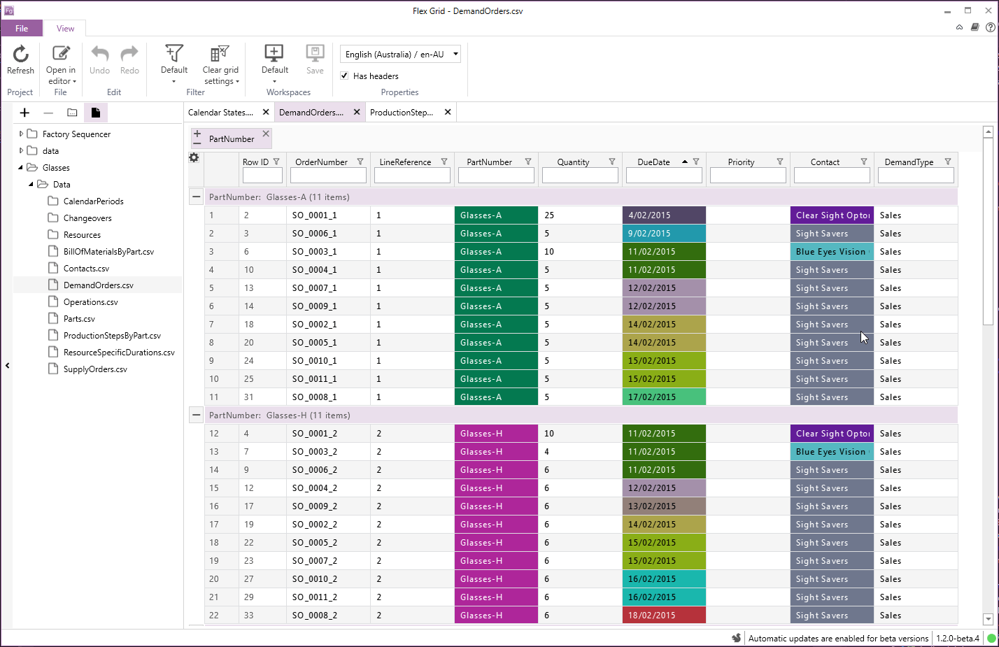

Welcome to the WildGums open-source center!
Imagine being in a candy shop. Everywhere you look, there is candy you were looking for! That’s what this centre aims to be for WPF developers. A list of mature, high-quality, free and open source components. Each library can be used on its own, but were designed to work seamingless together as well.
The libraries are actively maintained and developed (new prereleases on a daily basis, stable versions on a monthly basis).
The following platforms are supported:
WildGums is a company that develops professional WPF and web based applications that look good. When developing software, we are constantly looking out for the best frameworks and components available. A lot of components are hyped, but seem to provide very little added value when digging deeper. One framework that did deliver on its promise is Catel. It’s a very mature, well documented, well maintained and feature-rich application development platform.
Once we found the core platform to build our applications on, we were still having problems finding high-quality libraries. We have tried several commercial vendors, but found the support to be slow (or lacking). This made us decided it was time for a change… We were going to develop our own components, giving us control over the quality and throughput.
Since we started development, it has only confirmed our belief in open source software. It’s a great way to get feedback from other developers, allow them to contribute and improve the components in ways we might not even have thought of.
Our goal is to develop standard compliant, high quality libraries that will allow us and other developers to build applications quickly. (i.e within days, not weeks or months.)
To this end we also maintain and develop a WPF/XAML shell called Orchestra, which allows developers to focus on the business logic and less on scaffolding.
master branch).develop branch).Here are some examples of applications built with Orchestra and other Orc.* libraries:
| LogViewer | Rantt | CsvTextEditor | FlexGrid |
|---|---|---|---|
| Log viewer | Gantt chart application | Csv file text editor | Data visualizer |
|  |  |  |  |
LogViewer and CsvTextEditor are open source projects hosted on Github.
Other commercial applications can be found on our official website WildGums.com.
Please feel free to contribute, either by:
If you need help building a new desktop application (whether for internal use within your organization or to release to the public) or need to setup a complete dev ops environment (which will allow you to commit your code and have an new version of your plugin ready for consumption within minutes and automatically applied to your application), please send us an email: contact@wildgums.com
It took us a lot of time to get this right. What initially seems like a simple and quick task can end up taking months, so benefit from our experience and save yourself a lot of time and money by letting us show you how to release a desktop application within weeks.
Have a question about WildGums projects? Use StackOverflow with the Catel tag!